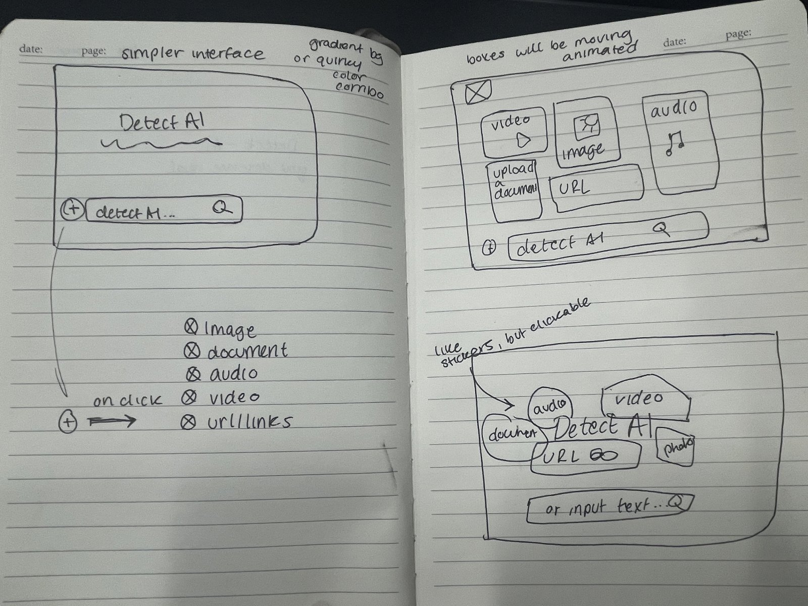
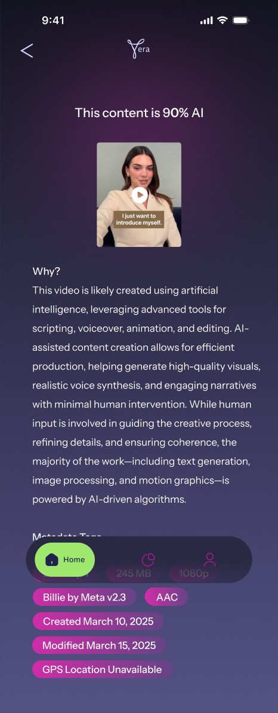

The big question
How might we increase AI literacy for the general public so that it is easily accessible for all?
The problem. AI-generated text, images, voices and video are getting harder to tell apart from human work, and misinformation spreads fastest in exactly the places people trust most: their feeds, their messages, their phone calls.
The brief. Mindpetal challenged us at UMD's Info Challenge to make AI recognition fun, creative and accessible, whatever someone's tech literacy. We had one week.
My part. I designed Vera's mobile app and its iOS integrations, an iMessage app for checking suspicious texts and a voicemail check from Control Center, and helped design the web homepage.
Research
Two people, very different reasons to doubt
We looked at how everyday people run into AI content and deliberately drew from opposite ends: an older user and a young creative. Both became personas that guided every screen.
Karen Johnson
60 · retired school teacher · suburban Ohio
Keeps up with family and news on Facebook and YouTube, but struggles to tell fake news, clickbait and manipulated images from the real thing.
Needs: a simple, reliable way to check what friends forward her, with clear explanations instead of jargon.
Alex Rivera
21 · art student · Brooklyn, NY
Comfortable in Procreate and Adobe, active in online art communities, and uneasy about AI art that mimics real artists' styles.
Needs: a trustworthy check on whether a piece is human-made, and a way to learn about AI without feeling overwhelmed.
What existing tools were missing
ZeroGPT
Simple, accurate and handles multiple files, but explains little and is mostly text-only.
Undetectable AI
Flexible, with text-to-speech, but slow to update and no image support.
Google Lens
Powerful image recognition and sources, but never says whether an image is AI-generated.
Design principles
What I designed against
01
Explain, don't just judge
A percentage alone teaches nothing. Every verdict comes with the why and the evidence.
02
Go where the content arrives
Karen won't open a new app to check a text. Vera should already be in Messages and on her calls.
03
An AI with personality
Bright, friendly and a little playful, so checking feels fun and people come back.
Sketching
From a search bar to clickable stickers
Our first sketch was a single "detect AI" bar with a plus button that revealed media types. It was simple, but hid what Vera could do.
The idea that stuck was turning each media type into a big, animated box, "like stickers, but clickable." Those boxes became the colored tiles that tie every Vera platform together.

My screens · interactive walkthrough
Try Vera on your phone
Pick a scenario, then use Vera the way Karen and Alex would: tap the glowing dot on each screen to take the next step.
{{title}}
{{blurb}}
Step {{stepNum}} of {{stepCount}}
{{stepTitle}}
{{stepDesc}}
{{hint}}
Hang on, Vera is working…

Key decisions
Designing a verdict people can learn from
Score, reason, evidence
Results lead with a plain verdict ("This content is 90% AI"), then a Why section in everyday language, then metadata tags: codec, model, created and modified dates, and whether GPS data exists.
One color per media type, everywhere
Video is always yellow, audio always pink, text always lime. The same six tiles appear in the app, inside Messages and on the web, so nothing has to be relearned.
Checks that come to you
For Karen, the riskiest content arrives as a heartfelt text from a stranger or a voicemail in a cloned politician's voice asking for money. The iMessage app and Control Center shortcut check those in place.
Waiting that feels alive
While Vera works, a glowing orb pulses with the file name above it. It gives the AI a presence and makes a few seconds of analysis feel intentional.
A greeting and your recents
"Good afternoon, Alex! What can I Vera-fy today?" makes the home screen feel personal, and recents let people return to past checks.
On the desktop · interactive walkthrough
Try Vera on the web
The same tiles, scaled up for a big screen. Watch the web prototype in action, then click through the Chrome extension yourself.
{{dStepTitle}}
{{dStepDesc}}
{{dHint}}
{{dCredit}}
Visual identity (shared)
Futuristic, but friendly
Our moodboard pointed to colorful gradients and an AI with personality. A deep night-sky gradient lets six saturated tiles pop, with magenta and lime glows giving Vera its glow.
#F3B440
#33AE9C
#E08AD1
#9E8FE2
#E74629
#ADFF71
Reflection
What a week with Vera taught me
Platform is a design decision. The most useful screens weren't in the app at all. Putting Vera inside Messages and Control Center meant designing for the moment of doubt, not the moment someone remembers to open a tool.
Literacy beats a number. Writing the Why section changed how I thought about the result screen: the goal is for people to recognize AI on their own next time.
Next steps. Test the iMessage and voicemail flows with older users like Karen, and design what happens when Vera isn't sure, so a middling score still helps someone decide.
The team